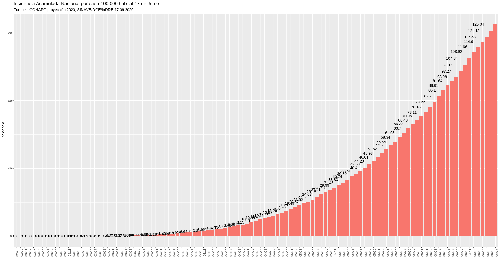

COVID-19 en México
Inicio
Datos por Estado
Tasas y Letalidad
Estimación
Seguimiento diario de indicadores de interés en México
sobre el comportamiento del COVID-19
Mapas Interactivos
Casos
confirmados
en México por estado.
Defunciones
en México por estado.
Casos y defunciones en el
Valle de México
por municipios.
Casos y defunciones en
Baja California
por municipios.
Casos y defunciones en
Sinaloa
por municipios.
Casos y defunciones en
Puebla
por municipios.
Casos y defunciones en
Oaxaca
por municipios.
Casos confirmados por municipio (el mapa es muy grande, decargue la carpeta casosMun y abra el archivo html con un navegador)
Descargar.
Histórico de casos confirmados y defunciones en la República Mexicana.
Comparación del número de casos entre México y Korea del Sur.
Incidencia acumulada a nivel nacional

Casos confirmados y defunciones nuevas por día